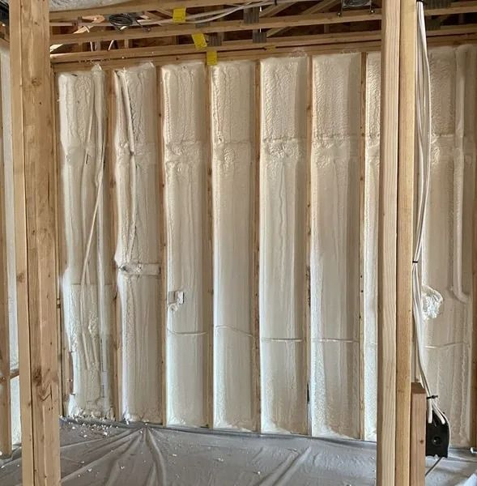
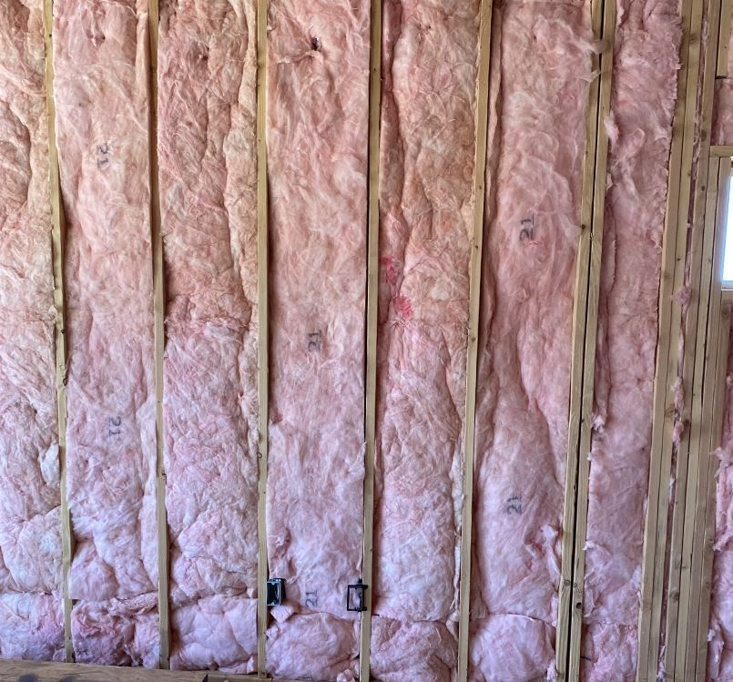

Page previews
Here are two pages built from the brand on your current site, so they match what you already have. Both are drafts. The photos come out of your gallery and the forms are not connected yet. Have a look and tell us what you want changed.

For builders and general contractors
A page you can send to GCs and custom builders who are shopping for an insulation sub. It leads on your scheduling, covering every scope with one crew, and passing inspection, rather than on homeowner comfort.
Open the page
Location page template, Hurricane example
The shape we would repeat for every town you want to rank in. The climate section, R-value table, warning signs and FAQ all get rewritten for each city, so no two pages read the same and Google treats them as separate pages.
Open the pageWhy we started with Hurricane
Your site currently has location pages for Beaver, Cedar City, Enoch, Parowan, Panguitch, Richfield and about ten other towns north and east of you. There is not one for St. George, Hurricane, Washington or Ivins, even though your home page title targets St. George and your contact page says you take spray foam work in all of them. Washington County is the bigger market and nothing is pointed at it, so that is where we would start.
What we need from you
- Is the home energy assessment free, or do you charge for it? Both pages sell it hard and neither one says which.
- The builder page says you offer volume pricing for repeat builders. Confirm that before it goes live, or we will pull it.
- Your contact page says cash and check only. Do you take card/financing?
What changes on each new location page
- Two paragraphs written from scratch for that town, on top of the swaps below. A template is fine with Google. Pages that are the same page with the city name changed are not, and these are what keep us on the right side of that.
- The title, meta description, headline and every mention of the city.
- The four climate cards, which carry the local argument. Hurricane gets heat and attic temperatures. Cedar City would get snow load and freeze-thaw instead.
- The R-value table. Washington and Kane County are R-38 in the ceiling, Iron, Beaver and Garfield are R-49.
- The neighborhood and nearby town list.
- One or two of the FAQ answers, so the pages are not copies of each other.
Private preview for Selby Insulation. These pages are not indexed and cannot be found by search.